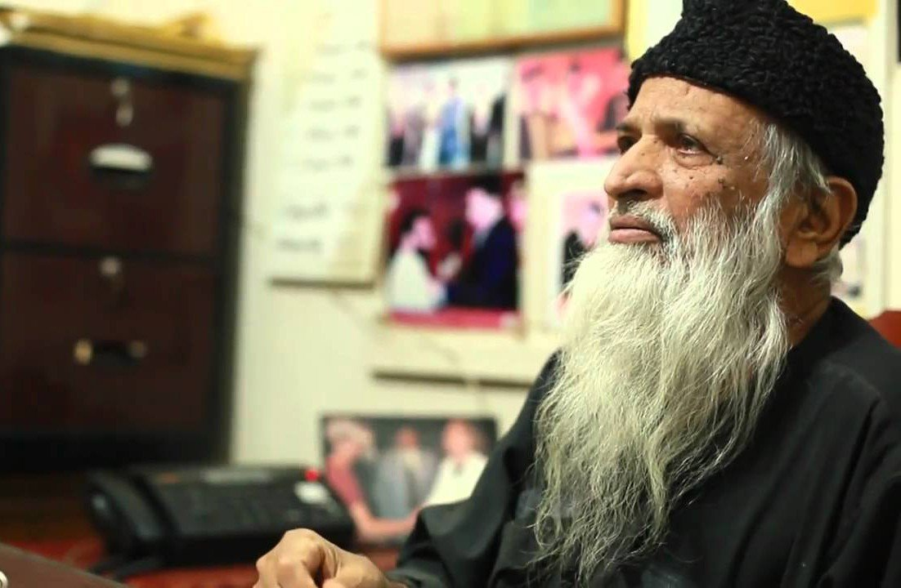
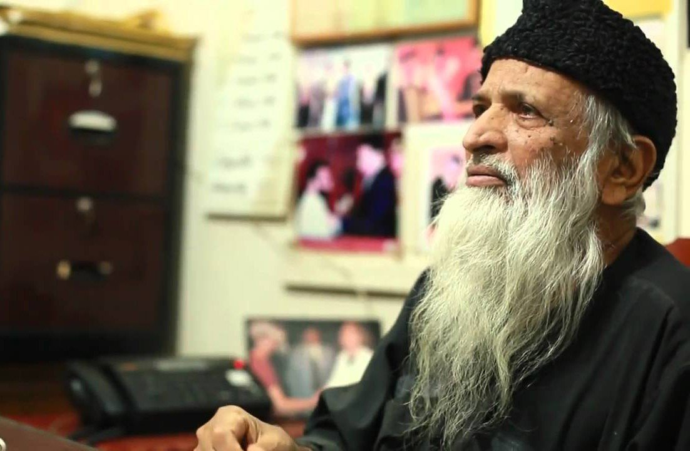
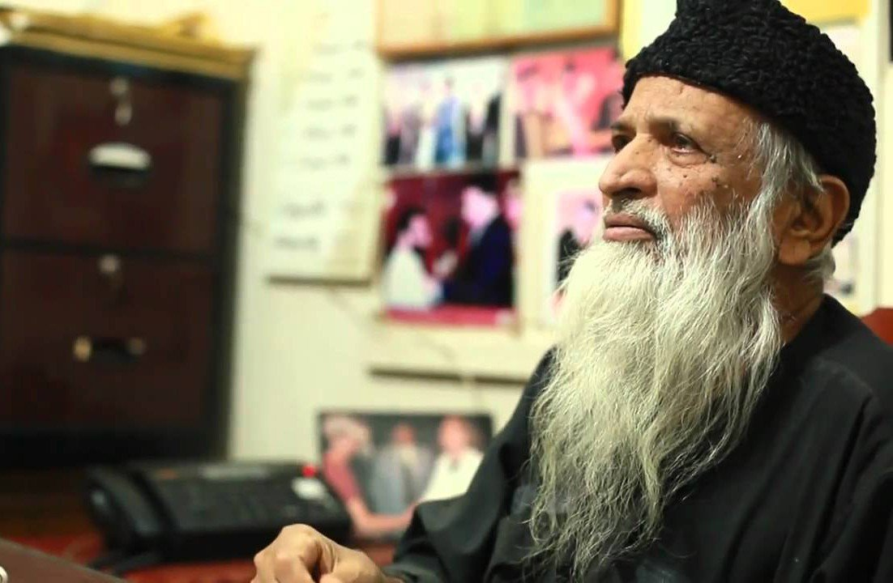
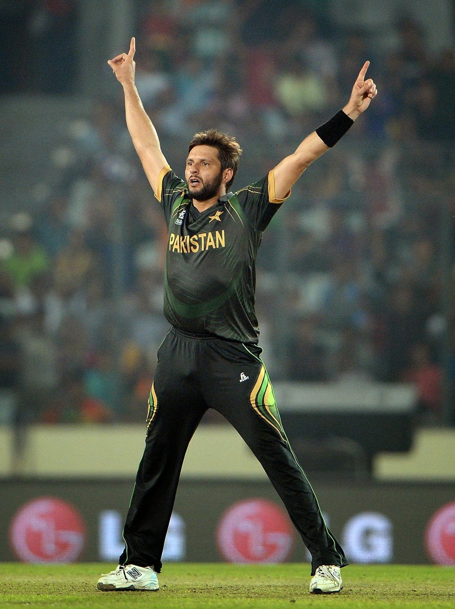

 | HOME | GALLERY | ABOUT US | CONTACT US | FEEDBACK |
Pakistan is a country where the famous personalities have an inspirational character that inspires many to be just like them. According to official sources, Pakistan is on the sixth rank in the list of the most populous country worldwide.The most famous people of Pakistan are highlighted in this article as they are the inspiring characters of the nation who are famous through their work or abilities. Pakistan is a country where the famous personalities have an inspirational character that inspires many to be just like them. According to official sources, Pakistan is on the sixth rank in the list of the most populous country worldwide. The most famous people of Pakistan are highlighted in this article as they are the inspiring characters of the nation who are famous through their work or abilities. The past celebrities were also known for their professional hit projects and for their significant contributions that kept them in the spotlight for years. A large fan base is required to be famous among many and much effort along with dedication and pure effort make it possible for a person to stand out as a shining star. Pakistan is known as to be the first Islamic nation that has the nuclear power. However, the nation has also given many worlds’ famous personalities just like the leaders of Pakistan or the celebrities such as Muhammad Ali Jinnah, Wasim Akram, Imran Khan, Ustad Nusrat Fateh Ali Khan, and numerous other incredible persons who have played a vital role in promoting the nation.The top 5 famous people of Pakistan are not only famous in the nation; however, they are famous across the border. The popularity of famous personalities in the nation has been gained through their work, achievements and their dedication that is depicted through their efforts. So if we take about the famous personalities of Pakistan who have contributed for the nation and had left the world, then the list of the people who have contributed bravely to make Pakistan a separate nation are on the top of the list. The people who are among the most famous personalities of Pakistan are:

Mohammed Ali Jinnah born December 25, 1876?, Karachi, India [now in Pakistan]—died September 11, 1948, Karachi Indian Muslim politician, who was the founder and first governor-general 1947–48 of Pakistan.Jinnah was the eldest of seven children of Jinnahbhai Poonja, a prosperous merchant, and his wife, Mithibai. His family was a member of the Khoja caste, Hindus who had converted to Islam centuries earlier and who were followers of the Aga Khan. There is some question about Jinnah’s date of birth: although he maintained that it was December 25, 1876, school records from Karachi (Pakistan) give a date of October 20, 1875.After being taught at home, Jinnah was sent in 1887 to the Sind Madrasat al-Islam (now Sindh Madressatul Islam University) in Karachi. Later he attended the Christian Missionary Society High School (also in Karachi), where at the age of 16 he passed the matriculation examination of the University of Bombay (now University of Mumbai, in Mumbai, India). On the advice of an English friend, his father decided to send him to England to acquire business experience. Jinnah, however, had made up his mind to become a barrister. In keeping with the custom of the time, his parents arranged for an early marriage for him before he left for England. In London he joined Lincoln’s Inn, one of the legal societies that prepared students for the bar. In 1895, at the age of 19, he was called to the bar. While in London Jinnah suffered two severe bereavements—the deaths of his wife and his mother. Nevertheless, he completed his formal studies and also made a study of the British political system, frequently visiting the House of Commons. He was greatly influenced by the liberalism of William E. Gladstone, who had become prime minister for the fourth time in 1892, the year of Jinnah’s arrival in London. Jinnah also took a keen interest in the affairs of India and in Indian students. When the Parsi leader Dadabhai Naoroji, a leading Indian nationalist, ran for the British Parliament, Jinnah and other Indian students worked day and night for him. Their efforts were crowned with success: Naoroji became the first Indian to sit in the House of Commons.


ABDUL SATTAR EDHI was born in 1928 1928 – 2016 in India, in Bantva, a small village near Joona Gurh, in Gujarat State. In 1947, after partition of the former British colony into two separate independent states, India and Pakistan, Abdul Sattar Edhi’s family, who were Muslims, moved to Pakistan. In 1974 Abdul Sattar Edhi establishes the Edhi Foundation which over the years has become the largest and best organized social welfare system in Pakistan and in the Third World. The Edhi Foundation operates on the basis of local volunteers and through private donations, in a spirit of tolerance and solidarity that goes beyond racial and religious barriers. With his wife Bilquis Abdul Sattar Edhi is still working in Karachi where his organisation helps the poorest and the most destitute, not only in Pakistan but also in other Third World countries. October 2000
Imran Khan born October 5, 1952, Lahore, Pakistan is an antiestablishment politician in Pakistan who in 2022 became the first prime minister (2018–22) to be removed by a parliamentary vote. He rose to fame as a cricket player who led Pakistan’s national team to a Cricket World Cup victory in 1992. He later entered politics as a critic of government corruption in Pakistan, although he faced corruption charges of his own in 2022 after falling out with the politically powerful army. Early life and cricket career Khan was born into an affluent Pashtun family in Lahore and was educated at elite schools in Pakistan and the United Kingdom, including the Royal Grammar School in Worcester and Aitchison College in Lahore. There were several accomplished cricket players in his family, including two elder cousins, Javed Burki and Majid Khan, who both served as captains of the Pakistani national team. Imran Khan played cricket in Pakistan and the United Kingdom in his teens and continued playing while studying philosophy, politics, and economics at the University of Oxford. Khan played his first match for Pakistan’s national team in 1971, but he did not take a permanent place on the team until after his graduation from Oxford in 1976. Political ascent In the months leading up to the legislative elections scheduled for early 2013, Khan and his party drew large crowds at rallies and attracted the support of several veteran politicians from Pakistan’s established parties. Further evidence of Khan’s rising political fortunes came in the form of an opinion poll in 2012 that found him to be the most popular political figure in Pakistan. Just days before legislative elections in May 2013, Khan injured his head and back when he fell from a platform at a campaign rally. He appeared on television from his hospital bed hours later to make a final appeal to voters. The elections produced the PTI’s highest totals yet, but the party still won less than half the number of seats won by the Pakistan Muslim League–Nawaz (PML-N), led by Nawaz Sharif. Khan accused the PML-N of rigging the elections. After his calls for an investigation went unmet, he and other opposition leaders led four months of protests in late 2014 in order to pressure Sharif to step down.
Malala Yousafzai was born on July 12, 1997, in Mingora, the largest city in the Swat Valley in what is now the Khyber Pakhtunkhwa Province of Pakistan. She is the daughter of Ziauddin and Tor Pekai Yousafzai and has two younger brothers. At a very young age, Malala developed a thirst for knowledge. For years her father, a passionate education advocate himself, ran a learning institution in the city, and school was a big part of Malala’s family. She later wrote that her father told her stories about how she would toddle into classes even before she could talk and acted as if she were the teacher. In 2007, when Malala was ten years old, the situation in the Swat Valley rapidly changed for her family and community. The Taliban began to control the Swat Valley and quickly became the dominant socio-political force throughout much of northwestern Pakistan. Girls were banned from attending school, and cultural activities like dancing and watching television were prohibited. Suicide attacks were widespread, and the group made its opposition to a proper education for girls a cornerstone of its terror campaign. By the end of 2008, the Taliban had destroyed some 400 schools. Determined to go to school and with a firm belief in her right to an education, Malala stood up to the Taliban. Alongside her father, Malala quickly became a critic of their tactics. “How dare the Taliban take away my basic right to education?” she once said on Pakistani TV. In early 2009, Malala started to blog anonymously on the Urdu language site of the British Broadcasting Corporation (BBC). She wrote about life in the Swat Valley under Taliban rule, and about her desire to go to school. Using the name “Gul Makai,” she described being forced to stay at home, and she questioned the motives of the Taliban. Malala was 11 years old when she wrote her first BBC diary entry. Under the blog heading “I am afraid,” she described her fear of a full-blown war in her beautiful Swat Valley, and her nightmares about being afraid to go to school because of the Taliban. Pakistan’s war with the Taliban was fast approaching, and on May 5, 2009, Malala became an internally displaced person (IDP), after having been forced to leave her home and seek safety hundreds of miles away. On her return, after weeks of being away from Swat, Malala once again used the media and continued her public campaign for her right to go to school. Her voice grew louder, and over the course of the next three years, she and her father became known throughout Pakistan for their determination to give Pakistani girls access to a free quality education. Her activism resulted in a nomination for the International Children’s Peace Prize in 2011. That same year, she was awarded Pakistan’s National Youth Peace Prize. But, not everyone supported and welcomed her campaign to bring about change in Swat. On the morning of October 9, 2012, 15-year-old Malala Yousafzai was shot by the Taliban. Seated on a bus heading home from school, Malala was talking with her friends about schoolwork. Two members of the Taliban stopped the bus. A young bearded Talib asked for Malala by name, and fired three shots at her. One of the bullets entered and exited her head and lodged in her shoulder. Malala was seriously wounded. That same day, she was airlifted to a Pakistani military hospital in Peshawar and four days later to an intensive care unit in Birmingham, England.


Shahid Afridi is a Pakistani qualified cricketer and ex- captain of the Pakistan national cricket team. He similarly holds a record of earning maximum wickets and most player of the match rewards in Twenty-20 International cricket.He is recognized for his energetic and dynamic batting style, and formerly carried the record for the fastest One Day International century in thirty seven supplies. He similarly carries the merit of having hit the maximum total of sixes in the antiquity of ODI cricket. Afridi reflects himself a finer bowler than batsman, and has earned forty eight Test wickets and more than 350 in ODIs. At present, Afridi is heading the chart of maximum T20I wickets with 92 wickets from 92 games. Afridi presently is the Head for Pakistan Super League team Peshawar Zalmi that is possessed by his cousin Javed Afridi.Shahid Afridi is a humanitarian and possessor of the Shahid Afridi Foundation. In the year 2015, Afridi was titled amongst the best 20 most altruistic sports persons in the world by Do Something.Shahid Afridi was born on the 1st day of March, the year 1980 in Khyber Agency of the Federally Administered Tribal Areas, Pakistan. He belongs to the Afridi ethnic group of Pashtuns. He is the cousin of CEO of Haier Pakistan, Javed Afridi. Afridi is wedded to Nadia and has four daughters, Ajwa Afridi, Asmara Afridi, Aqsa Afridi and Ansha Afridi.Beginning of Career In October, the year 1996 when he was at the age of 16 years, Afridi was enrolled into the One Day International team throughout the four-nation Sameer Cup 1996 and 1997 as a leg spinner as a substitute for the incapacitated Mushtaq Ahmed. He played his first ever match on 2 October versus Kenya, but he did not bat and left wicket less. In the following match versus Sri Lanka, Afridi batted at number three in the part of a pinch-hitter. In his first intercontinental match, he broke the best ever grading for fastest century in ODI cricket, attaining his hundred from thirty seven balls.The eleven sixes he hit too totaled the record for maximum in an ODI innings. Aged 16 years and 217 days, he turned out to be the youngest performer to score an ODI century. Pakistan displayed an aggregate of 371, at the time the second-highest in ODIs, and won by 82 runs, he was titled as man of the match. The record for fastest century in ODI was fragmented by New Zealand cricketer Corey Anderson on 1st January 2014, who hit 131* runs from 36 balls and is currently carried by South-African cricketer AB de Villiers who made a century from 31 balls on 18 January 2015 versus West Indies. Two years subsequently performing at the international scene, he made his Test match introduction in the 3rdcompetition of a three-match series versus Australia on 22nd October 1998. By this fact he had before now played sixty six ODIs, at the time a record before playing Tests. He unbolted the batting, creating scores of 10 and 6, and took five wickets in the first innings. He performed his second Test the next January throughout Pakistan’s trip to India, it was the first Test among the two teams ever since the year 1990. Yet again opening the batting, Afridi recorded his initial Test century, marking 141 runs from 191 balls. In the similar match he likewise appealed three wickets for 54 runs. Subsequently winning the initial match by 12 runs, Pakistan lost the second match to draw the series.His common way of batting is very dynamic and has received him the epithet “Boom Boom Afridi”. In addition, from the 7 fastest ODI centuries of all time, Afridi has created 3 of them. From May 2013, he has an ODI strike rate of 114.53 runs for each 100 balls, the third maximum in the game’s antiquity. This boldness has been conveyed to Test cricket also, with Afridi recording at a comparatively high strike rate of 86.97.
